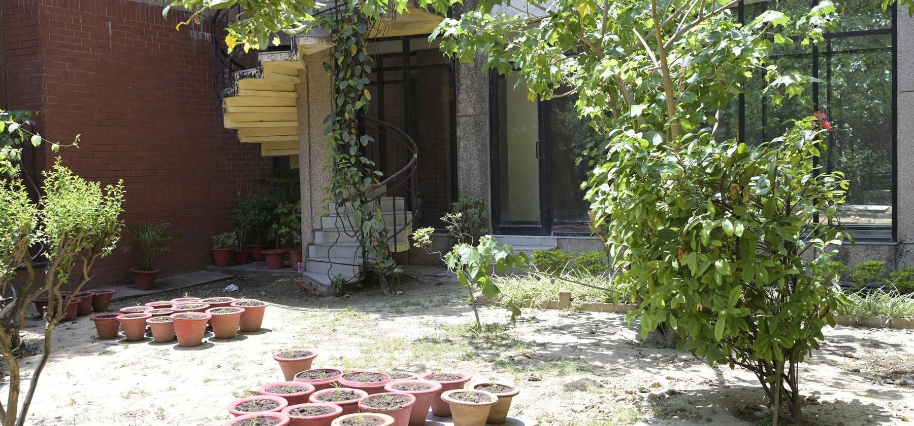
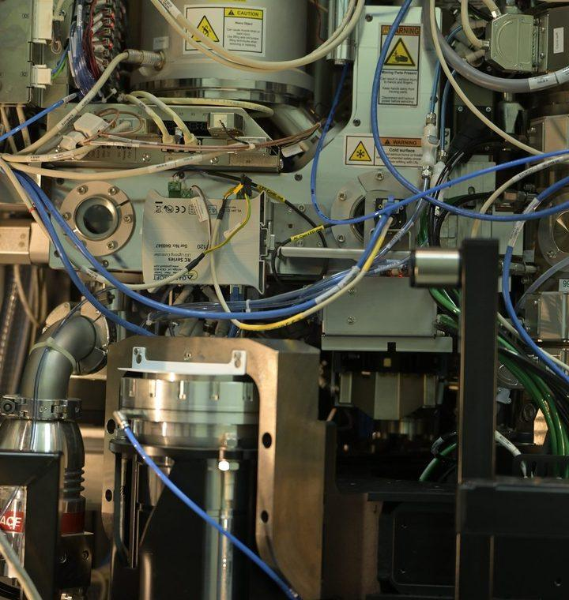

Investing in the Minds
That Advance Science
Young Faculty Research Fellowship
The Young Faculty Research Fellowship and faculty chair established by Mr. Ranodeb Roy, supports researchers across different career stages.
Through the Sajani Kumar Roy Memorial Chair and the Dr. Mahua Menon and Mr. Ranodeb Roy Young Faculty Research Fellowship, distinguished alumnus Ranodeb “Ronnie” Roy has created two enduring platforms for research excellence at IIT Kanpur—recognising accomplished scientists while helping younger faculty build ambitious academic careers.
Discovery begins with people
The most important research infrastructure at a university is not always visible. It is the faculty member asking an original question, building a laboratory, mentoring students and creating a research culture that continues beyond any single project.
Established researchers need recognition and the freedom to deepen influential work. Younger faculty need confidence, resources and institutional backing as they establish laboratories, recruit scholars and define their independent research direction.
Ranodeb Roy’s philanthropy addresses both moments.
The Sajani Kumar Roy Memorial Chair recognises distinguished scientific achievement. The Dr. Mahua Menon and Mr. Ranodeb Roy Young Faculty Research Fellowship supports exceptional researchers earlier in their faculty journeys.

Giving back more than was received
Ranodeb Roy graduated from IIT Kanpur with a B.Tech. in Computer Science and Engineering in 1990. He later built a global career in financial markets and co-founded RV Capital Management in Singapore. IIT Kanpur honoured him with its Distinguished Alumnus Award in 2022.
His support for the Institute has included faculty positions, scholarships, disability inclusion, online education and student initiatives. His philosophy is simple: giving back what one received is the minimum; giving back more leaves an institution stronger for those who follow.
Remembering through research
Established in 2006, the Sajani Kumar Roy Memorial Chair is open to faculty across IIT Kanpur’s science departments. Among its occupants was Prof. Amalendu Chandra, whose work advanced the theoretical and computational understanding of liquids, interfaces and complex chemical systems.
More recently, Prof. Nisanth N. Nair held the Chair from July 2022 to July 2025. His research combines computational chemistry and molecular dynamics to study reactions in solutions, enzymes and solid catalysts.
The Chair transforms personal remembrance into active scholarship—supporting accomplished researchers whose work can influence disciplines, students and future applications.

Supporting promise early
The Young Faculty Research Fellowship serves a different purpose. It recognises researchers while their independent academic identities are still taking shape.
Its current recipient, Prof. Manjesh Kumar Singh of Mechanical Engineering, works in tribology, rheology and soft matter. His research explores friction, wear, complex fluids and materials—questions central to manufacturing, energy efficiency and industrial reliability.
Before him, the Fellowship supported Prof. Mohammed Ibrahim Sugarno of Aerospace Engineering, whose work focuses on experimental hypersonic aerodynamics.
The movement from aerospace research to tribology demonstrates the Fellowship’s breadth. It follows the quality of the researcher rather than any single discipline.
A legacy carried by future questions
Together, the Chair and Fellowship support faculty across the long arc of an academic career—from emerging promise to established distinction.
Buildings give research a physical home. Equipment gives it capability. Faculty give it direction.
By investing in people at different career stages, Ranodeb Roy’s philanthropy continues to generate knowledge far beyond any single gift, recipient or generation.